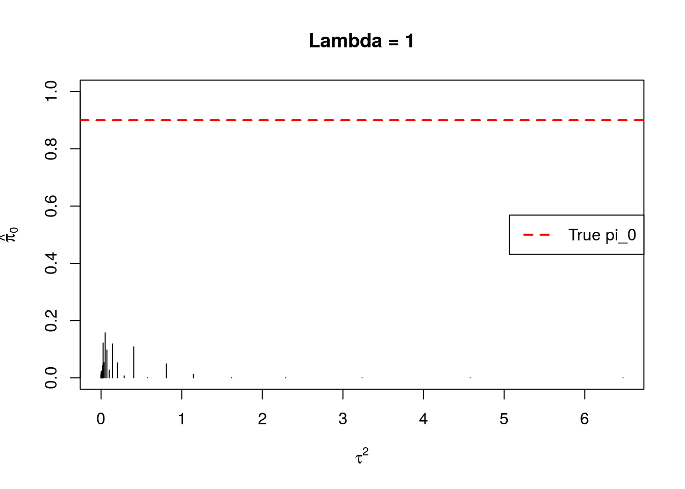
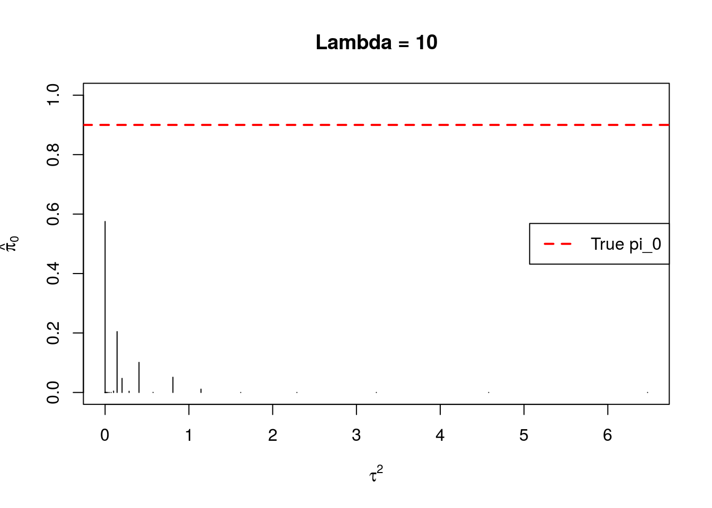
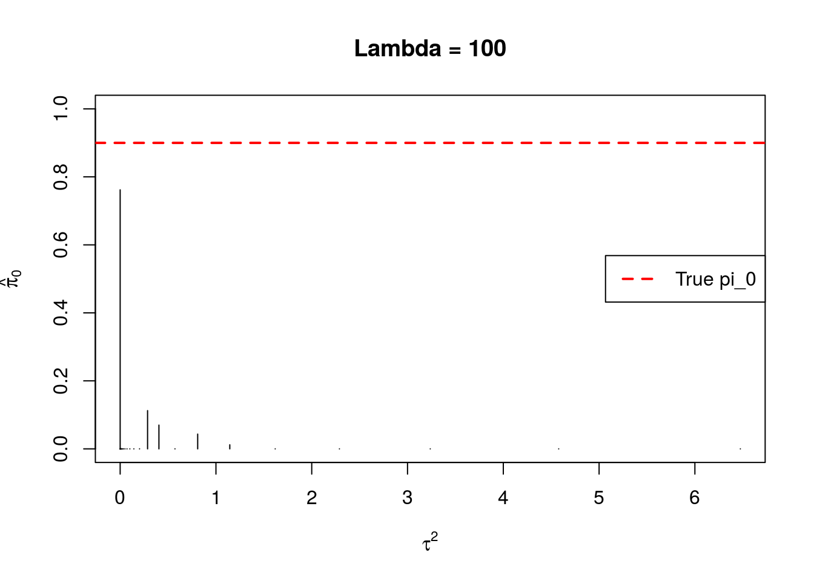

Last updated: 2016-02-26
Code version: 9194127460896ac99540bb382809a598857b4d7e
I look at an example where SUCCOTASH performs very poorly in estimating \(\pi_0\). Even when the regularization parameter is huge, SUCCOTASH will still underestimate \(\pi_0\). If we provide the true grid to SUCCOTASH, then it performs better.
Load in succotashr and source datamaker_gerard.R.
Set parameters for data generation and obtain data. We’ll look at the situation where
set.seed(34789)
args_val <- list()
args_val$tissue <- "Lung"
args_val$path <- "../data/"
args_val$Ngene <- 1000
## Nonnull case
args_val$poisthin <- TRUE
args_val$log2foldmean <- 0
args_val$skip_gene <- 5
args_val$Nsamp <- 10
args_val$log2foldsd <- 1
args_val$nullpi <- 0.9 ## true pi_0
d_out <- datamaker(args_val)Extract the data we need to run succotash.
num_sv <- d_out$meta$dfargs$num.sv
Ycounts <- d_out$input$counts
Y <- t(log(as.matrix(Ycounts) + 1)) ## log(counts + 1)
X <- model.matrix(~d_out$input$condition)succotash and observe \(\hat{\pi}_0\) values.suc_out <- succotash(Y = Y, X = X, k = num_sv, fa_method = "pca", lambda0 = 1, num_em_runs = 3) ## no regularization
suc_out10 <- succotash(Y = Y, X = X, k = num_sv, fa_method = "pca", lambda0 = 10, num_em_runs = 3) ## no regularization
suc_out100 <- succotash(Y = Y, X = X, k = num_sv, fa_method = "pca", lambda0 = 100, num_em_runs = 3) ## no regularization
suc_out200 <- succotash(Y = Y, X = X, k = num_sv, fa_method = "pca", lambda0 = 200, num_em_runs = 3) ## no regularizationThis is an example where the default regularization provides a \(\pi_0\) of only 0.5752. Let’s look at the estimates of the \(\pi\)’s for each value of regularization.
plot(suc_out$tau_seq, suc_out$pi_vals, type = 'h', ylim = c(0,1), xlab = expression(tau^2),
ylab = expression(hat(pi)[0]), main = "Lambda = 1")
abline(h = args_val$nullpi, col = 2, lwd = 2, lty = 2)
legend("right", "True pi_0", col = 2, lwd = 2, lty = 2)
plot(suc_out10$tau_seq, suc_out10$pi_vals, type = 'h', ylim = c(0,1), xlab = expression(tau^2),
ylab = expression(hat(pi)[0]), main = "Lambda = 10")
abline(h = args_val$nullpi, col = 2, lwd = 2, lty = 2)
legend("right", "True pi_0", col = 2, lwd = 2, lty = 2)
plot(suc_out100$tau_seq, suc_out100$pi_vals, type = 'h', ylim = c(0,1), xlab = expression(tau^2),
ylab = expression(hat(pi)[0]), main = "Lambda = 100")
abline(h = args_val$nullpi, col = 2, lwd = 2, lty = 2)
legend("right", "True pi_0", col = 2, lwd = 2, lty = 2)
plot(suc_out200$tau_seq, suc_out200$pi_vals, type = 'h', ylim = c(0,1), xlab = expression(tau^2),
ylab = expression(hat(pi)[0]), main = "Lambda = 200")
abline(h = args_val$nullpi, col = 2, lwd = 2, lty = 2)
legend("right", "True pi_0", col = 2, lwd = 2, lty = 2)A huge amount of mass is very close to 0, but not quite 0. When there is no regularization (\(\lambda = 1\)), the amount of mass on variances less than 0.5 is 0.9387. I don’t think I need to run more than 3 EM runs. By default, the first EM run puts \(1/p\) mass on all \(\tau_k\) such that \(\pi_k \neq 0\) and puts the remaining mass on \(\pi_0\). This would be an initial condition of placing 0.967 mass on \(\pi_0\), which is very large and close to the truth. If we give it the true grid but randomize the inital values of \(\pi_0\) and \(\pi_1\) then we get pretty good results:
for(index in 1:5) {
pi_init <- runif(1)
suc_out_zero <- succotashr::succotash_given_alpha(Y = suc_out$Y1_scaled, alpha = suc_out$alpha_scaled,
sig_diag = suc_out$sig_diag_scaled, num_em_runs = 10,
tau_seq = c(0, 1), em_pi_init = c(pi_init, 1 - pi_init))
cat("Repetition =", index,"\n")
cat(" Pi0_hat =", suc_out_zero$pi_vals,"\n\n")
}Repetition = 1
Pi0_hat = 0.839 0.161
Repetition = 2
Pi0_hat = 0.839 0.161
Repetition = 3
Pi0_hat = 0.839 0.161
Repetition = 4
Pi0_hat = 0.839 0.161
Repetition = 5
Pi0_hat = 0.839 0.161 sessionInfo()R version 3.2.3 (2015-12-10)
Platform: x86_64-pc-linux-gnu (64-bit)
Running under: Ubuntu 14.04.4 LTS
locale:
[1] LC_CTYPE=en_US.UTF-8 LC_NUMERIC=C
[3] LC_TIME=en_US.UTF-8 LC_COLLATE=en_US.UTF-8
[5] LC_MONETARY=en_US.UTF-8 LC_MESSAGES=en_US.UTF-8
[7] LC_PAPER=en_US.UTF-8 LC_NAME=C
[9] LC_ADDRESS=C LC_TELEPHONE=C
[11] LC_MEASUREMENT=en_US.UTF-8 LC_IDENTIFICATION=C
attached base packages:
[1] stats graphics grDevices utils datasets methods base
other attached packages:
[1] knitr_1.12.3
loaded via a namespace (and not attached):
[1] magrittr_1.5 formatR_1.2.1 tools_3.2.3 htmltools_0.3
[5] yaml_2.1.13 succotashr_0.1.0 SQUAREM_2014.8-1 stringi_1.0-1
[9] rmarkdown_0.9.2 stringr_1.0.0 digest_0.6.9 evaluate_0.8